Sampling from Known and Unknown Measures¶
from qmcpy import *
from numpy import *
from scipy import stats
from matplotlib import pyplot
Inverse CDF Sampling¶
Exponential¶
# constants
lambda_ = 1.5
exp_pdf = lambda x,l=lambda_: l*exp(-l*x)
exp_inverse_cdf = lambda u,l=lambda_: -log(1-u)/l
# 1 dimension
exponential_measure = InverseCDFSampling(
distribution_mimicking_uniform = Lattice(dimension=1,seed=7),
inverse_cdf_fun = exp_inverse_cdf)
exp_samples = exponential_measure.gen_samples(2**12)
# samples plot
pyplot.hist(exp_samples,bins='auto',density=True,color='c')
# curve plot
pts = arange(0,4,.01)
pyplot.plot(pts,exp_pdf(pts),color='r')
# plot metas
pyplot.xlim([0,4])
pyplot.xlabel('$x$')
pyplot.ylabel('$f(x)$')
pyplot.title('Density $exp(\lambda=%.1f)$'%lambda_);
# 2 dimension
exponential_measure = InverseCDFSampling(
distribution_mimicking_uniform = Sobol(dimension=2,seed=7),
inverse_cdf_fun = exp_inverse_cdf)
exp_samples = exponential_measure.gen_samples(2**8)
pyplot.scatter(exp_samples[:,0],exp_samples[:,1],color='g')
pyplot.xlabel('$x_0$')
pyplot.ylabel('$x_1$')
pyplot.title('2 Dimensional $exp(\lambda=%.1f)$ samples'%lambda_);
Cauchy¶
# constants
x0 = -2
gamma = .75
cauchy_pdf = lambda x,x0=x0,gamma=gamma: (pi*gamma*(1+((x-x0)/gamma)**2))**(-1)
cauchy_inverse_cdf = lambda u,x0=x0,gamma=gamma: tan(pi*(u-.5))*gamma+x0
# 1 dimension
distribution = Sobol(dimension=1)
cauchy_measure = InverseCDFSampling(
distribution_mimicking_uniform = Sobol(dimension=1,seed=7),
inverse_cdf_fun = cauchy_inverse_cdf)
cauchy_samples = cauchy_measure.gen_samples(2**8)
# samples plot
pyplot.hist(cauchy_samples,bins='auto',density=True,color='c')
# curve plot
pts = arange(-5,5,.01)
pyplot.plot(pts,cauchy_pdf(pts),color='r')
# plot metas
pyplot.xlim([-5,5])
pyplot.xlabel('$x$')
pyplot.ylabel('$f(x)$')
pyplot.title('Density $cauchy(x_0=%.1f,\gamma=%.1f)$'%(x0,gamma));
Acceptance Rejection Sampling¶
def f(x):
x = x if x<.5 else 1-x # utilize symmetry
density = 16*x/3 if x<1/4 else 4/3
return density
sampling_measure = Uniform(IIDStdUniform(1,seed=7))
distribution = AcceptanceRejectionSampling(
objective_pdf = f,
measure_to_sample_from = sampling_measure)
samples = distribution.gen_samples(5000)
print('Expected (total draws / successful draws) = c = %.3f'%distribution.c)
print('Successful Draws: %-5d Total Draws: %d'%(distribution.successful_draws,distribution.total_draws))
# samples plot
pyplot.hist(samples,bins='auto',density=True,color='c')
# curve plots
pts = arange(0,1,.01)
pyplot.plot(pts,list(map(f,pts)),color='r',label='objective_pdf')
gaussian_curve = distribution.c*array([sampling_measure.pdf(x) for x in pts]).flatten()
pyplot.plot(pts,gaussian_curve,color='b',label='uniform_pdf')
# plot metas
pyplot.legend()
pyplot.xlim([0,1])
pyplot.xlabel('$x$')
pyplot.ylabel('Density $f(x)$')
pyplot.title('Density $f(x)$');
Expected (total draws / successful draws) = c = 1.333
Successful Draws: 5000 Total Draws: 6673
Bayesian Example¶
Taken from Bayesian Data Analysis. 3rd Edition. Andrew Gelman, John B. Carlin, Hal S. Stern, David B. Dunson, Aki Vehtari, Donald B. Rubin. Chapter 10 Section 9 (Exercises) Problem 5
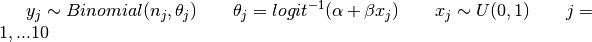
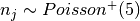 where 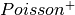 is the Poisson distribution restricted to positive values
Independent priors 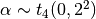 and 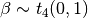
# Sample a dataset
random.seed(7)
sigmoid = lambda x: 1/(1+exp(-x)) # inverse logit
j = 10
prior_alpha = stats.t.rvs(df=4,loc=0,scale=2,size=j)
prior_beta = stats.t.rvs(df=4,loc=0,scale=1,size=j)
x = stats.uniform.rvs(loc=0,scale=1,size=j)
n = stats.poisson.rvs(mu=5,size=j)
if (n==0).any(): raise Exception('all n must be positive')
theta = sigmoid(prior_alpha+prior_beta*x)
y = stats.binom.rvs(n=n,p=theta,size=j)
def posterior_density(params): # proportaional to p(alpha,beta|y) --> distribution.c is NOT interpretable
alpha,beta = params
prior_dens = stats.t.pdf(alpha,df=4,loc=0,scale=2)*stats.t.pdf(beta,df=4,loc=0,scale=1)
theta = sigmoid(alpha+beta*x)
sampling_dens = prod(theta**y * (1-theta)**(n-y))
posterior_dens = prior_dens*sampling_dens
return posterior_dens
# Naive sampling_measure
sampling_measure = Gaussian(IIDStdGaussian(2,seed=7),mean=[0,0],covariance=[[2,0],[0,1]])
distribution = AcceptanceRejectionSampling(posterior_density,sampling_measure)
samples = distribution.gen_samples(100)
pd_mean_estimate = samples.mean(0)
pd_cov_estimate = cov(samples.T)
print('Successful Draws: %-5d Total Draws: %d'%(distribution.successful_draws,distribution.total_draws))
print('Posterior samples mean\n%s'%str(pd_mean_estimate))
print('Posterior samples covariance\n%s'%str(pd_cov_estimate))
Successful Draws: 100 Total Draws: 1401
Posterior samples mean
[ 1.339 -0.335]
Posterior samples covariance
[[ 0.320 -0.355]
[-0.355 0.568]]
# More Efficient sampling_measure using estimate of posterior mean and covariance
sampling_measure = Gaussian(IIDStdGaussian(2,seed=7),mean=pd_mean_estimate,covariance=pd_cov_estimate)
distribution = AcceptanceRejectionSampling(posterior_density,sampling_measure)
samples = distribution.gen_samples(1000)
print('Successful Draws: %-5d Total Draws: %d'%(distribution.successful_draws,distribution.total_draws))
print('95%% confidence interval for alpha: (%.3f,%.3f)'%tuple(quantile(samples[:,0],[.025,.975])))
print('95%% confidence interval for beta: (%.3f,%.3f)'%tuple(quantile(samples[:,1],[.025,.975])))
Successful Draws: 1000 Total Draws: 2488
95% confidence interval for alpha: (0.526,2.186)
95% confidence interval for beta: (-1.014,0.421)
Importance Sampling¶
Let 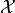 be the domain. We are interested in integrand 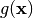 defined with respect to measure 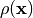 for 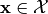.
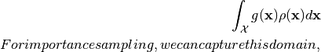
, in a unit box, 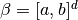, such that
Quarter Circle Example¶
Let the domain be the quarter unit circle in the first quadrant 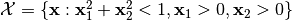, the integrand 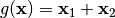, and our measure 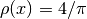. Therefore we choose 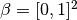 and solve
true_value = 8/(3*pi)
abs_tol = .001
def quarter_circle_uniform_pdf(x):
x1,x2 = x
if sqrt(x1**2+x2**2)<1 and x1>=0 and x2>=0:
return 4/pi # 1/(pi*(1**2)/4)
else:
return 0. # outside of quarter circle
measure = ImportanceSampling(
objective_pdf = quarter_circle_uniform_pdf,
measure_to_sample_from = Uniform(Lattice(dimension=2,seed=9)))
integrand = QuickConstruct(measure, lambda x: x.sum(1))
solution,data = CubLattice_g(integrand,abs_tol=abs_tol).integrate()
print(data)
within_tol = abs(solution-true_value)<abs_tol
print('Within tolerance of true value %.3f: %s'%(true_value,within_tol))
Solution: 0.8479
QuickConstruct (Integrand Object)
Lattice (DiscreteDistribution Object)
dimension 2
scramble 1
seed 9
backend gail
mimics StdUniform
ImportanceSampling (TrueMeasure Object)
distrib_name Lattice
CubLattice_g (StoppingCriterion Object)
abs_tol 0.001
rel_tol 0
n_init 1024
n_max 34359738368
CubatureData (AccumulateData Object)
n_total 8192
solution 0.848
r_lag 4
time_integrate 0.138
Within tolerance of true value 0.849: True